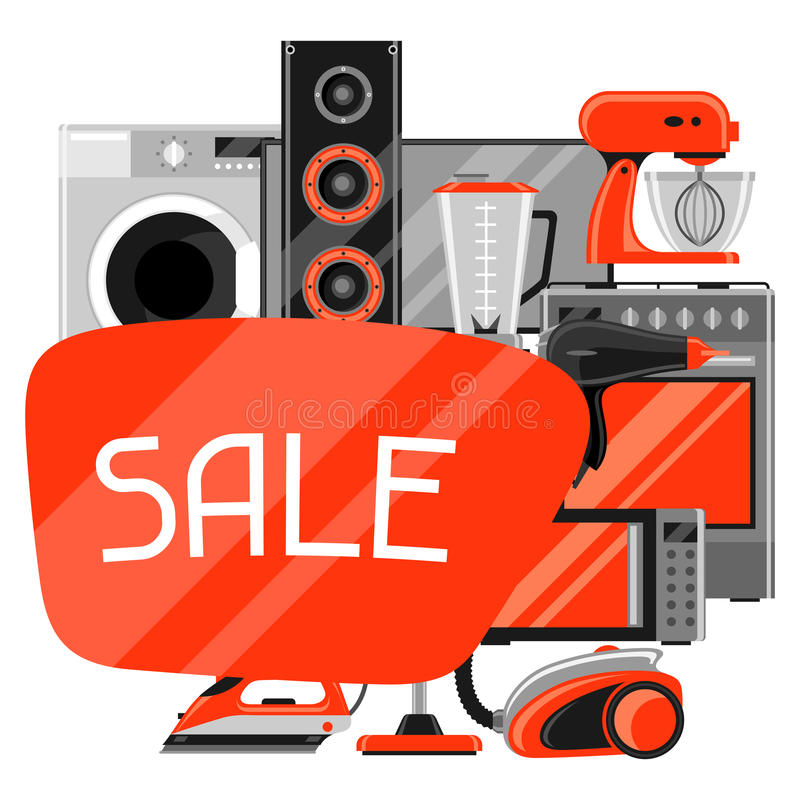

1.- Vende aquellas cosas que ya no uses
De seguro tienes en tu casa un montón de objetos que ya no necesitas, deberías considerar venderlos. Además, como bien dice el dicho: “La basura de alguien es el tesoro de otro”.
Una manera fácil de ganar dinero rápido es vender artículos valiosos y de gran demanda. Busca alrededor de tu casa objetos que sean comúnmente vendidos, pero que ya no necesites.

Algunos objetos que puedes vender sin mucho problema son CD’s, libros, instrumentos musicales, juguetes coleccionables, computadoras, televisores, altavoces, videojuegos, joyería, artesanía e incluso tarjetas de regalo.
¿como puedes vender estos artículos y hacer dinero fácil?
- Publicarlos en las redes sociales, un contacto podría estar interesado.
- Hacer ventas de jardín o garaje, tan solo necesitarás una mesa y un poco de sombra.
- Ir a los mercados de pulgas, cientos de personas se reúnen ahí para comprar y vender.
- Publicarlo en sitios en línea como eBay, te facilitara mucho la venta.
Adicionalmente aquí te dejamos una guía para aprender cómo vender por Internet. - Ir a casas de empeño, te pagaran por ellos de inmediato.
Si deseas vender tus objetos a toda prisa establece precios competitivos, véndelos a la mitad del valor de lo se encontrarían en otro lugar. Sin embargo debes tener cuidado, esto no quiere decir que los vendas por precios demasiado reducidos.
2.- Haz dinero en línea
Si estás interesado en esta manera de ganar dinero rápido, hemos creado una guía que te explica. Encuentra tareas pequeñas y pagas a través de aplicaciones o páginas de internet para ganar dinero rápido. Hay varias aplicaciones y webs para conseguir dinero que te pagarán por efectuar tareas de marketing (como escanear productos en una tienda de comestibles) o te conectarán con alguien que desea una tarea más extensa (como completar una encuesta). Es posible que no puedas ganar mucho dinero de esta manera. Sin embargo, gracias a que son tareas cortas y fáciles, podrás ganar dinero rápido y sin mucho problema.

Cómo ganar dinero rápido con encuestas
Las encuestas son comunes en la web y aseguran un dinero rápido. Muchos comerciantes usan las respuestas de encuestas para encontrar formas de mejorar su marketing. Hay muchos sitios web dedicados a conectar a los usuarios con encuestas gratuitas en línea. Estos habitualmente solo pagan como máximo unos pocos dólares cada una, pero requieren muy poco esfuerzo y pueden proporcionar un pago rápido. El programa Mechanical Turk de Amazon es otra forma de ganar dinero rápido en línea respondiendo preguntas o completando tareas simples. Sin embargo, el pago generalmente es muy bajo, a menudo solo unos pocos centavos por tarea.
Otras plataformas para ganar dinero con encuestas pagadas son:
- Opiniolandia en Mexico
- Opiniolandia en Colombia
- Opiniolandia en Argentina
- Clixsense
3.- Ganar dinero rápido con el reciclaje
Aunque muchos crean que no, con el reciclaje puedes hacer dinero de manera rápida y sencilla. Puedes devolver botellas y latas a plantas de reciclaje para ganar algunos dólares. En algunos países, se puede conseguir de 5 a 10 centavos de dólar por lata o botella devolviéndolos a un centro de depósitos. En lugar de arrojar a cualquier contenedor todas esas latas y botellas con las que ya has consumido, puedes arrojarlas en una bolsa y llevarlas a tu casa para luego llevarlas a estos centros. Así mismo, si vives en una urbanización o comunidad de vecinos, puedes ganar dinero rápido presentándoles una iniciativa de reciclaje para ayudar a construir un ambiente más ecológico. Por ejemplo, puedes decirles que en lugar de arrojar los envases a la basura, te los den a ti. Una opción sería dejar un contenedor adornado fuera de tu casa o apartamento, para que los vecinos puedan arrojar todo lo que se pueda reciclar. Así les ofreces un servicio y podrás depositar todos esos envases en los centros mencionados. Si tu estado no cuenta con un sistema de devolución de latas o botellas, aún puedes ganar dinero rápido si vendes latas de aluminio a un depósito de chatarra. Inclusive, si tienes una gran pila de chatarra en tu patio trasero, posees una carrocería abandonada u otro vehículo, puedes venderlo en un depósito de chatarra o en un centro de reciclaje.
4.- Vende tus imágenes o fotografías
Esto es para los apasionados de la fotografía. Hoy en día no hace falta tener una cámara de última generación con millones de pixeles a la hora de hacer una foto. Los teléfonos nuevos están muy bien equipados tecnológicamente y hacen fotografías perfectas. Todo es cuestión de aprender los conceptos básicos para tomar buenas imágenes, aquí tienes algunos cursos online de fotografía. Por lo tanto, si tienes fotos de paisajes o fotos generales (fotos detalles a flores, a edificios, a comida, etc), que no sean personales, y son de buena calidad puedes intentar venderlas en algunas plataformas con Shutterstock o Depositphotos.
5.- Vende por partes los equipos electrónicos dañados o sin valor
Si posees equipos electrónicos dañados o sin valor alguno, desmantélalos y véndelos por partes. Las computadoras, por ejemplo, están llenas de metales valiosos como el acero, el aluminio y el oro. Si es posible, acumula una gran cantidad de computadoras para hacer que valga la pena. Ofrécete a sacar las computadoras desactualizadas de cualquier edificio o escuela que ya no las use. No deseches las computadoras que funcionan bien; lo que obtienes por la chatarra probablemente no sea tanto como lo que podrías obtener vendiendo todo el dispositivo.
6.-Puedes cuidar o pasear mascotas
Encuentra amigos que salgan de la ciudad y ofréceles cuidar a sus mascotas mientras están fuera. Los lugares de cuidado de mascotas profesionales suelen ser muy costosos (sin mencionar que son impersonales e intimidantes para una mascota), por lo que tu acogedora casa o apartamento puede ser una alternativa muy agradable. Las personas que poseen perros, pero están demasiado ocupados para caminar te agradecerán la oportunidad de que sus mascotas caminen. Haz un volante o publica un anuncio en los tableros o clasificados en línea o del periódico.
7.- Por último, si tienes algún talento haz de artista callejero.
Si puedes bailar, tocar música, hacer mímica, cantar o contar chistes, probablemente puedas obtener algo de dinero si actúas en público. Arma un buen acto y encuentra un lugar adecuado para realizarlo. Ofréceles a las personas entretenimiento en vivo, y con suerte, te lo recompensarán con propinas. Mucho cuidado, siempre debes revisar las leyes locales antes de actuar en público, algunas áreas tienen prohibiciones o restricciones en este tipo de trabajo.